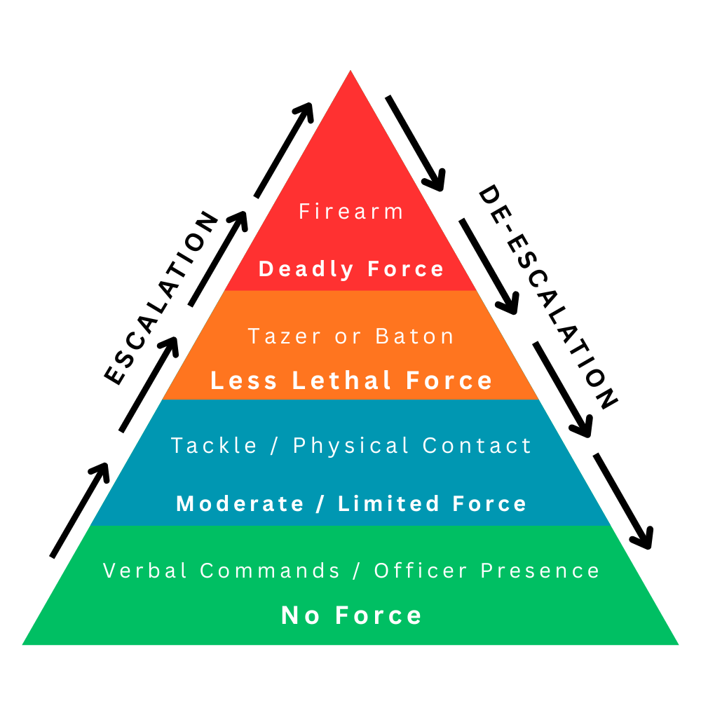

Serving with Honour & Integrity
Welcome to the Los Santos Police Department. As an employee of the State, you are expected to uphold the highest standards of professionalism and dedication to public service. Standard Operating Procedures for the Police Department. You are an employee of the State, during your time in employment, you are expected to ensure you follow the Laws within Los Santos, and subsequently enforce the Law in your position as an Officer. You can find in this document definitions that will help with your educational knowledge for the procedures within the Policing Departments.
Key Information for Police Employees
- Respect the Chain of Command
- Ensure Standard Operating Procedures are followed as required
- All evidence should be logged and stored, and then stored in evidence rooms as soon as possible
- Ensure you are fair and open, and only base your decisions on facts, training, or interview knowledge. We do not know mechanics
- We cannot speak to 'suppliers' of certain things; from our view, they are not willing to talk or engage with the Police
Induction Procedures
Induction (CPL & Above): Hire via Services App. Interview, decide Officer (2 x Ride Along) or Cadet. Induction covers: Welcome, Equipment Checklist, Standards, MDT, Radio, Call Signs & 10-Codes.
Cadet follows process with FTO as in MDT FTO Reports. Officer continues journey.
Standard Equipment
Standard issue and optional equipment for officers. Equipment details to be added by department leadership.
- 1 x Taser
- 1 x Stun Gun
- 2 x Heavy Armour
- 1 x Nightstick
- 1 x MDT
- 1 x Fingerprint Scanner
- 1 x Radio
- 1 x Handcuffs
- 1 x IFAK
- 1 x Panic Button
- 1 x PD Repair Kit
- 1 x Flashlight
- 1 x Combat Pistol
- 1 x Notepad
- 1 x Plate Remover
- 1 x Megaphone
- 1 x Tracker
- 10 x DNA Swab
- 10 x GSR Kit
Understanding the Force Continuum
The Force Continuum Triangle is a model that outlines the levels of force officers may use in response to a subject's actions. Officers must always use the minimum force necessary to safely resolve a situation.

Visual representation of the Force Continuum. Consult department policy for details.
Equipment Access & Allocation
- Spike strips are obtained from the armoury.
- Each officer may take one reusable set.
- Officers are responsible for proper use and retrieval.
Deployment Length Rules
- 1st deployment → Length 2
- 2nd deployment → Length 3
- 3rd deployment → Length 4
- Any deviation requires Command approval.
Deployer & Remote Deployment Restrictions
- These modes are ONLY for major incidents:
- Pacific Standard Bank
- Paleto Bank
- Major hostage situations
- Large‑scale coordinated criminal events
- Not permitted for routine pursuits unless authorised.
Safe Deployment Requirements
- Must be deployed from a safe position:
- Behind cover, a vehicle, or a barrier
- Never in the direct path of the suspect vehicle
- Must have a clear escape route
- Must NOT to be used on any 2 Wheeled Vehicles e.g. Motorbike / Bike
- Avoid unsafe areas:
- Blind corners, heavy traffic, pedestrian zones
- Bridges, steep inclines, low‑visibility areas
- Ensure the strip can be safely retrieved afterward.
Communication Requirements
- Clearly announce intent to deploy.
- State location, direction of travel, and length.
- Confirm when spikes are active and when they are clear.
- Notify Command if the suspect vehicle has been spiked.
Post‑Deployment
- Retrieve the strip as soon as safe.
- Confirm retrieval over radio.
- Return to armoury if required and complete any necessary reporting.
Policy
Air Units must be flown safely, legally, and only on approved missions. The helicopter is a powerful but expensive tool, and its use carries significant risk—including the possibility of catastrophic loss of life. For this reason, only certified pilots may operate the aircraft, and misuse will result in loss of certification and possible disciplinary action.
Purpose
The Air Unit’s primary role is aerial observation in support of criminal apprehension. Acting as an airborne command post, it guides ground units to criminal activity as it occurs. Secondary roles include service calls, search operations, traffic monitoring, and crowd management, where its flexibility offers critical support.
Standard Operational Procedures - Approved Usage For Air One
- Surveillance
- Raids
- Crowd Control
- MAJOR/Violent Crimes (Bank/Jewellery Store/Bank Truck Robberies, Shootings, Kidnappings, etc.)
- Rescue (If No EMS Rescue Available)
- Any Missions Approved by Command
General Flight Operation
- NO LEO or INDIVIDUAL should enter the aircraft’s pilot seat if they are not “Air One Certified” which requires the individual to complete the “Air One Training Course" set up by Air One Leads and AirDogs Flying School.
- Passengers are NOT permitted to shoot from the aircraft unless approved by High Command.
- Pilots shall maintain a safe altitude when operating the Air Unit. Reasonable elevations would be approximately 100-200 feet above the surface, unless deemed necessary based on the nature of the approved mission.
- Pilots are ultimately responsible for the safety of the aircraft and all passengers.
- The aircraft is to Return To Base (RTB) in the event of inclement weather.
- Air One can only be involved during a chase for 15 minutes at a time before RTB for refuelling unless directly authorised by Command.
Personnel Responsibilities
Pilot
- Responsible for the safe operation of the aircraft.
- Responsible for the safety of the aircraft and occupants inside.
- Only in extreme circumstances should a trained pilot operate the aircraft alone.
Co-Pilot
- Responsible for the operation of the on board camera.
- Responsible for radio communications.
- Alerts the pilot of any hazards pertinent to the safety of the aircraft.
Disciplinary Guidelines
- All Air One Pilots must follow the guidelines that have been laid out in the SOP.
- All Air One Pilots must not use the Aircraft for anything other than work purposes unless approved by High Command.
- All Air One Pilots will be required to undergo training and checks when requested by an Air One Instructor or a member of Command.
- If any Air One Pilot is found to be abusing our aircraft for any reason your certification may be revoked.
- Only Certified Air One Pilots are permitted to enter the Pilot Seat of the aircraft, unless undergoing training.
Miscellaneous Procedures
- Co-Pilots are required, unless ranked Officer or Higher (Still Recommended).
- Exemptions for Single Pilot Operations may be revoked on an individual basis due to unsafe flying or poor mission performance.
- If Air One is going down you should call “Mayday Mayday Mayday Air One going down at (Location).”
- Air One should be mobilized for all raids. Air One can be overhead and relay comms to LEOs on the ground. If Air One starts taking shots be cautious and if you feel as though the helicopter will be shot down, RTB and get a car to assist on the ground.
- If Air One is disabled while enroute, on scene or departing an active shootout (whether by gunfire or crash) secondary Air Units are NOT authorized to attach to the scene. Due to state insurance limitations, Air One shall NOT land on a building that is not accessible by ladder unless said building has a necessary refuel point.
The role of primary on scene will be assigned to the first person to arrive on scene regardless of rank.
The objective is to control the scene of a situation and delegate/perform the below roles:
- Ensuring a safe perimeter has been set
- Plate scan the vehicle to ensure it is broadcasted via /411
- Initial brief over radio of the situation (Location, Vehicles, Number of suspects, Hostages)
- Begin hostage negotiations or delegate
- Ensuring a report has been started
- Ensure Pursuit order is set or delegate
- Ensure Officer remain behind to breach, clear and take a statement from the hostage
- At any point a Higher Ranking officer has the ability to take over in order to guide the way.
Reasonable Suspicion
A suspicion, based on specific and articulable facts, that you, as an officer, believe that a suspect has committed, will commit or is about to commit a crime. Reasonable Suspicion is grounds for detaining, but not arresting. This allows you to question, GSR and Frisk (If you believe they are armed and dangerous).
Probable Cause
Probable cause requires that the police have more than just suspicion that a suspect committed a crime. You have hard evidence someone has committed a crime, but this does not have to be complete certainty. You can search and arrest with probable cause.
The Difference:
Reasonable suspicion is a step before probable cause. At the point of reasonable suspicion, it appears that a crime may have been committed. The situation escalates to probable cause when it becomes obvious that a crime has most likely been committed. Evidence is key to having a distinct difference where the required Probable Cause has been reached to arrest and search a suspect.
When can you Frisk?
You can conduct a frisk when you have Reasonable Suspicion that a person has committed, will commit or is committing a crime AND is armed and dangerous (Terry v. Ohio 1968). When you frisk and remove a weapon, you can only see the weapon and nothing else.
When can you search a person or vehicle? (Carroll vs United States)
- You can search a person when you have Probable Cause to arrest
- The vehicle has been involved in a crime or contains illegal contraband
- You can search a person/vehicle when you have consent
- You can search a person under extreme circumstances (saving someone's life takes precedence over SOPs and case laws)
- You can search a vehicle when you are checking the vehicle after an incident in which you impounded the car
General Rules
- All citizens have an amendment right to purchase and possess firearms
- Any weapons not sold by licensed State distributors (Ammunition) are to be seized and destroyed
- If a citizen is found with a firearm without a licence, the firearm will be confiscated and they will be charged with unlicensed possession
- If a citizen is found with an illegal firearm, they will have their licence revoked
- If a citizen commits a felony crime with a firearm in possession, it will be confiscated and not returned, and license revoked
Authorization Levels:
To issue a new license: Full Officer or above
To reissue a license: Corporal or above
License Issue Steps
- Ask for the recipient's Physical ID
- Test their knowledge with 2 self-defense scenarios
- Inform them to stay on scene and call 911 if they discharge their firearm
- Check recipient's profile on MDT (Add photo if not present)
- Bill $1000 for new license, $2500 for reissue (after 21 days with no violent crime)
- Issue license via MDT - License lasts 3 months from issue date
Repairing PD Vehicles
- Carry Repair Kits (Bought at a mechanic)
- Duct Tape (Bought at Tool Station)
- Visit a Mechanics & Bennys
- Use garages where possible for repairs. Ensure vehicles are repaired before putting them away
Impound Vehicles
- Check for tow trucks first. If none, use access tool and drive back to MRPD/Impound via PD escort
- Use /IV to open out impound menu to view and process any vehicle impound.
Lockbox
Accessed from the F6 wheel while in a vehicle. Used to store only Class 2 Firearms whilst on duty. Once off High Alert, move to using these lockboxes.
Plate Scanner
Keybind needs to be via /radar. With radar on, click the keybind to scan the vehicle and get Bolo/reported stolen/name/plate, etc. Plate Scanner needs to be on at all times.
Minimum Officer Count: 7 officers required for safe prison transport
Transport Requirements
Prison transport for anyone sentenced to 60+ months in Bolingbroke. Ready to transport as soon as processing is done.
Prison Bus Escort (2 Officers Min)
- 1 x STX
- 2 x Baller
- 1 x Air One plus Co-Pilot (optional)
Attempted Breakout Protocol:
If a breakout occurs en route, 78S WILL BE CALLED. Transport stops, all units surround bus, officers stay with prisoners, units cover bus and act on weapon identification. Bus stays until safe. If prisoner escapes, units pursue as per SOPs.
Escort Procedures
Escort vehicles block/station at junctions, air one provides overview. Blocking/escort vehicle stays until convoy passes, then moves ahead to next junction.
If EMS are Available
- Check vitals (pulse, injuries)
- If no pulse, perform CPR
- See if responsive – ask what happened
- Contact EMS (Radio 10 AND /911e), advise on situation
- If performing CPR, continue until EMS arrives
If EMS are NOT Available
- Check vitals (pulse, injuries)
- If no pulse, perform CPR
- See if responsive – ask what happened
- If shot, stop bleeding. If neck injury, apply brace
- Carry/Escort to Police Vehicle, transport to Pillbox for treatment
- Pack wound, bandage, apply neck brace as needed
Alert Levels
- Routine Duty: Business as usual. Entered after every tsunami. Maintain awareness, no special measures beyond normal duty
- Substantial Threat: Elevated security. Triggered by sustained threat. Additional protective measures required. Body armour, pair up, carry Class 2 openly
- Critical Threat: Maximum protective security. Triggered by severe threats (e.g., Class 3 usage). Heavier uniform, double units, Class 3 rifle on back
Weapon Classification
- Class 0: Non-lethal
- Class 1: Single-fire / lower calibre
- Class 2: Automatic fire (low calibre) OR single-fire (high calibre)
- Class 3: Snipers, explosives, automatic fire (high calibre)
Miscellaneous Information
- Boats: Collect PD Boat at Vespucci Beach (next to pier)
- Equipment Returns: On separation, surrender all issued equipment to San Andreas Law Enforcement. Complete PR (Property Return) Form for all equipment returned
- Leave of Absence (LOA): No prior approval needed. Mark yourself as [LOA] in email system & LOA Channel
10-41 - On Duty
10-42 - Off Duty
10-6 - Busy, Unless Urgent
10-7 - Out Of Service
10-8 - Back In Service
10-9 - Repeat
10-2 - Loud & Clear
10-3 - Break
10-4 - Acknowledgment
10-95 - Suspect in Custody
10-76 - Enroute
10-77 - Backup Required
10-78 - Backup Required (Urgent)
10-80 - Pursuit in Progress
10-20 - Location
10-90 - Robbery in Progress
10-23 - Arriving on Scene
10-98 - Jail Break
10-31 - Crime in Progress
10-38 - Traffic Stop
10-47 - Injured Person
10-13A - Officer Down (Emergency)
10-13B - Officer Down (Non-Emergency)
10-14A - Medic Down (Emergency)
10-14B - Medic Down (Non-Emergency)
10-50 - Traffic Accident
10-71 - Shots Fired
10-69 - Turtled
10-231 - Cooper's Car is Upside Down
10-100 - Headpop
Code 1 - No Lights or Sirens
Code 2 - Lights Only
Code 3 - Lights and Sirens
Code 4 - All Clear
Code 5 - Stake Out
Code 6 - Searching the Area
UTL - Unable to Locate
VCB - Visual Contact Broken
1. General Conduct & Professional Standards
- Officers must comply with all traffic laws unless engaged in authorized emergency response.
- Officers must operate motorcycles in a manner that ensures safety of self, colleagues, and the public.
- Full uniform, protective gear, and issued safety equipment must be worn at all times.
- Officers shall treat all members of the public with professionalism and respect.
2. Pre-Shift Procedures
- Conduct a full motorcycle inspection (brakes, tires, lights, sirens, fluids, fuel).
- Ensure personal protective equipment (PPE) is serviceable (helmet, gloves, boots, body armor).
- Log vehicle condition and mileage before deployment.
[If the bike is damaged and or low on fuel document this and forward it to moto leads]
3. Patrol & Traffic Duties
- Motorbike officers shall maintain high-visibility patrol in assigned areas.
- Use motorcycles for rapid response, traffic enforcement, and congestion navigation.
4. Emergency Response
- Activate lights and sirens when responding to emergencies.
- Maintain safe speeds relative to environment, and traffic conditions.
5. Pursuit Policy
- Pursuits should only be initiated if the suspected offense is serious enough to justify risks.
- Officers must continuously assess risk to the public, self, and suspect.
- Wheelies are permitted on the motorbike but must be conducted in a safe manner and not cause risk of injury to the rider or members of the public.
- A motor unit should only take primary in the chase if a car unit is unable to continue or if the vehicle pursuing is a motorbike or similar.
6. Arrest
- Bike units must not transport 95’s on the back of the bike, either for medical purposes or processing purposes.
7. Training & Qualifications
- Officers must complete certified motorcycle operator training.
- Periodic refresher training required (defensive riding, pursuit, convoy operations).
8. Post-Shift Procedures
- Refuel and check the motorcycle before the end of duty.
- Make sure moto’s are parked away in the garage fully repaired, any officer found parking them away in a poor state will be penalised.
Disclaimer
Any officer found in breach of any of these SOP’s set out will be subjected to either having their certification revoked or suspended from the motor unit. This will be at the discretion of Moto leads or High Command.
Police Radar
| Function |
Key |
| Toggle Radar |
F5 |
| Interact with Radar |
K |
| Save Reading |
J |
| Lock/Unlock Radar |
F9 |
| Switch to Front |
← |
| Switch to Rear |
→ |
| Toggle Log |
F10 |
| Toggle BOLO List |
F11 |
| Show/Hide Keybinds |
F12 |
Vehicle Controls
| Function |
Key |
| Engine Toggle |
B |
| Sirens |
Q |
| Horn |
E |
| Lights |
G |
| Windows Up |
4 |
| Windows Down |
5 |
| Trunk/Hood |
6 |
| Doors Lock/Unlock |
L |
| Radio Menu |
M |
Training Ranks & Responsibilities
The Los Santos Police Department utilizes a structured rank system to guide training,
development, and progression within the department. Each rank reflects an officer’s
level of training, experience, and leadership responsibility. Advancement is based
on performance, knowledge of SOPs, and demonstrated professionalism.
Cadet (Training Rank)
- Enrolled in the Police Academy and FTO Program
- Required to complete ride-alongs with a Field Training Officer (FTO)
- Learn laws, SOPs, radio procedures, MDT usage, and basic policing skills
- May only act under direct supervision
- Not authorized for independent patrol or scene command until completed basic training
- Evaluated through FTO reports and performance reviews
Officer
- Successfully completed academy and field training
- Authorized to patrol independently
- Apply training knowledge to live calls and investigations
- Maintain accurate reports and proper evidence handling
- Eligible for specialty units and additional certifications
Corporal
- Mentors Cadets and junior Officers
- Assists with informal training and SOP guidance
- Reinforces department standards and RP quality
- Supports FTOs and Sergeants when required
- Sign off Cadets for Promotion
Sergeant
- Supervises units and training progression
- Reviews reports for SOP compliance
- Identifies training deficiencies and assigns remedial training
- Approves pursuits and high-risk actions per SOP
- Promote for Officers and higher with approval
Lieutenant
- Oversees multiple shifts
- Manages major incidents and command-level training
- Assists with promotion evaluations and assessments
- Ensures consistent training standards department-wide
- Acts as command authority when required
- Promote for Officers/Corporal and higher with approval
Captain
- Develops and enforces SOPs and training policies
- Approves advanced certifications and unit placements
- Mentors Lieutenants and Sergeants in leadership development
Assistant Chief
- Ensures long-term officer development and professionalism
- Acts as Chief when required
Chief
- Final authority over all training, promotions, and standards
- Establishes long-term vision for officer development
- Approves major policy and training reforms
- Ensures department-wide professionalism
Training Expectations
All members are expected to respect the chain of command, actively improve their skills, accept corrective training when required, and maintain professionalism throughout their career.
Vehicle Allocation by Rank
Cruiser
The Cruiser is our primary patrol vehicle, unless stated otherwise this is the vehicle we need to be using for patrol.
| Panto | Cadet+ |
| Cruiser | Cadet+ |
| STX | Officer+ |
| Bison | Corporal+ |
| Baller | Corporal+ |
| Cypher | Interceptor Lead & SRU Cert Only |
| Sultan | SRU Cert Only |
| Dominator | SRU Cert Only |
| PD Helicopter | SRU Cert Only |
| Dinka Thrust | Moto Cert Only |
| BF400 | Moto Cert Only |
House Robbery (Includes Trevor's, Wade's & Mansion)
Store Robbery / Cash Exchange / Pillbox
Davis & Vangelicos
- 4 Units Max
- Air One can be negotiated in – 15 mins in air – 5 Down for fuel or 1x Interceptor
Fleeca Bank
- 5 Units Max
- Max 2 x Interceptors, 1 can be negotiated OUT
- Air One can be negotiated in – 15 mins in air – 5 Down for fuel
Paleto Bank
- 6 Units Max
- Air One mandatory – 15 mins in air – 5 Down for fuel
- Max 2 x Interceptors, 1 can be negotiated OUT
Pacific Bank
- 12 Units Max
- Max 4 x Interceptor
- Air One Mandatory – 15 mins in air – 5 Down for fuel. Air 2 can also be used
Evidence Collection
All evidence must be properly logged, photographed, and stored according to department procedures. Evidence handling procedures to be detailed by department leadership.
Purpose
The Street Racing Unit (SRU) is a specialized division within the Los Santos Police Department
tasked with identifying, deterring, investigating, and enforcing laws related to illegal
street racing and associated criminal activity. SRU prioritizes public safety, evidence-based
enforcement, and intelligence-led operations.
Mission Statement
The mission of SRU is to reduce illegal street racing through proactive patrols, undercover
operations, intelligence gathering, and coordinated enforcement actions while maintaining
professionalism and adherence to LSPD policies.
Authority & Jurisdiction
- SRU operates under LSPD command authority
- SRU officers retain full police powers within the City of Los Santos and surrounding jurisdictions
- All SRU operations must comply with LSPD SOPs and server rules
Unit Structure
- SRU Commander: Oversees unit operations, training, and coordination
- SRU Supervisor (Sergeant): Manages daily deployments and investigations
- SRU Officers: Assigned to enforcement and investigations
- Probationary SRU Officers: Undergoing SRU training and evaluation
Selection & Training
- Minimum patrol experience as defined by LSPD
- Clean disciplinary record
- Demonstrated advanced driving skills
- Completion of SRU training:
- Advanced Pursuit Driving
- Vehicle Identification & Modifications
- Evidence Collection for Racing Cases
- Undercover & Surveillance Tactics
- Use of Force & De-escalation
Uniforms & Vehicles
- Plainclothes or approved tactical attire permitted during operations
- Identification must be accessible at all times
- Only approved marked or unmarked performance vehicles may be used
- Unauthorized vehicle use is prohibited
-
Vehicles requiring a Dominator:
- Jester Classic
- Jester RR
- Jugular
- Schlagen GT
- Sunrise
- Sultan (Highway Blaster)
- Vehicles must be returned in pristine condition after shift
Operations
- Patrol high-risk racing zones
- Event-based patrols during peak racing hours
- Traffic observation and intelligence gathering
- Undercover operations require supervisor approval
- Arrests during undercover operations must be legally justified
Pursuit Policy (SRU-Specific)
- All pursuits must comply with LSPD pursuit policy
- High-speed pursuits only when justified by public safety risk
- Pursuits must be terminated when danger outweighs necessity
Evidence & Investigations
- Preserve dashcam, bodycam, and aerial footage
- Collect vehicle data, witness statements, and digital evidence
- Maintain detailed case files for prosecution
Communications
- Use approved radio channels
- Maintain clear and professional radio traffic
- Coordinate with Air One, Patrol, and TAC units when required
Use of Force
- Force must be reasonable, necessary, and proportional
- Deadly force only when authorized under LSPD policy
- All force usage must be documented
Conduct & Discipline
- SRU officers are held to the highest professional standards
- Misconduct or abuse of authority may result in removal from SRU
Reporting & Review
- All SRU operations require appropriate reports
- Major incidents must be reported to a supervisor
- SOPs are subject to review and amendment with command approval
Important
SRU is a privilege assignment. Certification may be revoked at any time for unsafe driving,
SOP violations, or conduct unbecoming of an LSPD officer.
Miranda Warning Script
"You have the right to remain silent. Anything you say can and will be used against you in a court of law. You have the right to an attorney. If you cannot afford an attorney, one will be appointed for you. Do you understand these rights as I have read them to you?"
When to Read Miranda
Miranda rights must be read to all suspects in custody prior to questioning. This follows the Miranda v. Arizona case law and ensures suspects are aware of their rights. Not required for general questioning, traffic stops, or voluntary statements.